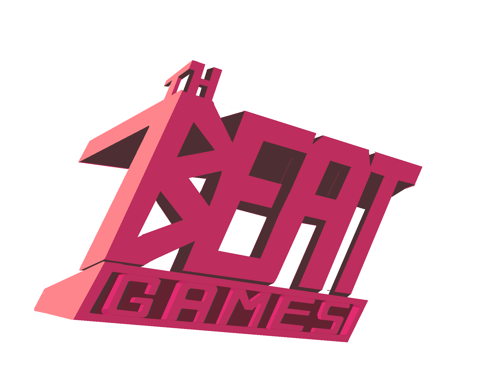

Description
We make hardcore one-button rhythm games!
History
Early history
Two friends, Hafiz Azman and Winston Lee, learnt game development solely driven by one game idea, while studying Engineering and Actuarial Science at the University of Cambridge. At the time the game designer had been finishing his Diploma in Music programme, and the idea was of a game that would be able to teach complex music theory concepts invisibly. They released a demo of 'Rhythm Doctor' and won a Student IGF nomination for the game in 2014. The response was overwhelming, with the online demo being played more than 500,000 times. That was the year they set foot in the US for the first time.
At GDC, they met Giacomo Preciado, a programmer from Peru, and he joined as 7th Beat Games' third member. Today after graduation, the three work on the game from their respective home countries.
Projects
Videos
Greenlight Trailer YouTube
Gameplay Overview YouTube
Images


Logo & Icon
{kind=link}
Awards & Recognition
- "IndieCade LA Finalist" IndieCade LA, 2017
- "WePlay China Best Overseas Game Nominee" China, 2017
- "Level Up KL Best Audio Winner" Malaysia, 2017
- "BICFest Best Audio Winner" South Korea, 2017
- "Indie Prize: Best Audio Award" Casual Connect, Singapore, May 2017
- "IGF Student Showcase Nominee" San Francisco GDC, 2014
- "PC Gamers' Top 50 Free Games of All Time" PC Gamer, 2016
- "Government Grant Recepient" Intellectual Property Creators Challenge (IPCC), Malaysia, 2015
- "Peru Startup Government Grant Recepient" Peru, 2017
- "Dare to be Digital 2015 Nominee" Dundee, UK, 2015
Selected Articles
-
The base mechanic and premise of Rhythm Doctor are gold for me. Rhythm is in everything, and I'm glad the developers found it in medicine.
John Polson, IndieGames.com -
I found it hard to drag myself away from this little gem.
Colin Campbell, Polygon -
Rhythm Doctor is a trippy rhythm game that aims to invisibly teach you complex music and rhythm theory (...) It looks cool and sounds great.
Nathan Grayson, Kotaku -
A genuine masterclass in rhythm game design.
Laura Kate Dale, IndieHaven -
Even if you've checked it out before, please try this new build. It's deliciously difficult, and that's really what keeps me coming back.
Dale North, Destructoid -
a rad Rhythm Paradise-esque browser game (...) sadistically difficult.
Jeffrey Matulef, Eurogamer
Additional Links
- Rhythm Doctor Browser Demo
- fizzd.itch.io.
- Rhythm Doctor Greenlight Page
- steamcommunity.com.
Team & Repeating Collaborator
- Hafiz Azman
- Game Design, Programming, Music
- Winston Lee
- Artist
- Giacomo Preciado
- Programming
- Alberto Gonzalez
- Additional Programming
- Jakob Crowe
- Additional Level Designer
- Kyle Labriola
- PR/Marketing, Community Manager
Contact
- twitter.com/RhythmDrGame
- facebook.com/rhythmdrgame
- Website
- rhythmdr.com